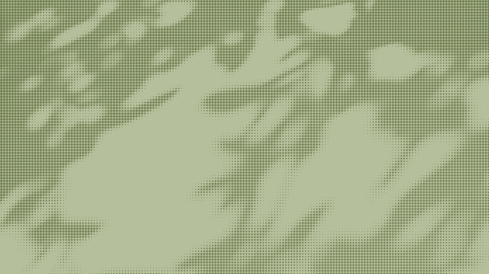

06 — Elementos de Design
Um elemento de cada vez.
Existe variedade de elementos de apoio justamente para escolher o mais adequado a cada necessidade — nunca empilhar supergraphic + halftone + hand-drawn na mesma peça.
agente/00_LEIA-ME_INSTRUCOES_PARA_AGENTES.md.Square supergraphic
Fundos monocromáticos em cores de marca — forma simples de simular "digital collage" sem montar do zero. Ao sobrepor texto, usar a versão de menor contraste.
Spark halftone texture
Tratamento textural aplicado a imagens — usado majoritariamente como fundo tonal abstrato. Watch-out técnico: vibração de padrão em telas digitais — mitigar aumentando a escala ou usando cor de menor contraste.

Hand-drawn toolkit
Elementos renderizados à mão, estilo de linha/contorno gestual simples. Não recriar nem gerar em estilo diferente — usar exclusivamente os arquivos existentes.
Tamanho máximo para detalhes soltos: 40px. Ícones temáticos (People, Comms, Data, Creative...): máx. 120px, mín. 50px — nota: esses ícones específicos não foram localizados como arquivos separados no brand kit fornecido; não inventar, sinalizar a lacuna.
Ícones hand-drawn por categoria — ausência confirmada
O guideline cita ícones para People/Global, Comms, Data Insights, Creative, Strategy, Technology, Journey/Timeline, Social, Misc e Health (máx. 120px, mín. 50px). Em 2026-07-22 fizemos uma busca direta em toda a árvore do brand kit completo — nenhum arquivo separado dessas categorias existe. Provavelmente estão só embutidos no PDF do guideline ou nos slides `.pptx`, não exportados como assets isolados.
Core values illustration (Heart, Brains, Courage)
Ilustrações de contorno simples para os valores da empresa — key art, fundos de Teams, pôsteres, cabeçalho de e-mail. Não alterar nem recriar em estilo diferente. Não incluídas neste manual — disponíveis no brand kit completo.
Ilustração customizada
Watch-outs gerais
- Não usar todos os elementos ao mesmo tempo numa única peça.
- Não usar elementos de marca em cores fora da paleta oficial.
- Não recriar um elemento se ele já existe no toolkit — usar o arquivo original.
- Não recriar ou imitar o estilo de ilustração sem contatar o time de marca.
- Não inventar uma variação de cor/textura que não esteja disponível.